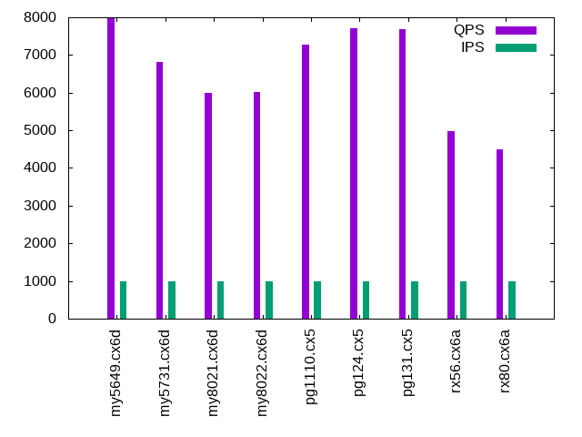

Introduction
This is a report for the insert benchmark with 100M docs and 1 client(s). It is generated by scripts (bash, awk, sed) and Tufte might not be impressed. An overview of the insert benchmark is here and a short update is here. Below, by DBMS, I mean DBMS+version.config. An example is my8020.c10b40 where my means MySQL, 8020 is version 8.0.20 and c10b40 is the name for the configuration file.
The test server is an Intel NUC. Clients and the DBMS share one server.
The tested DBMS are:
- pg1110.cx5 - Postgres 11.10 with the cx5 config
- pg124.cx5 - Postgres 12.4 with the cx5 config
- pg131.cx5 - Postgres 13.1 with the cx5 config
- my5649.cx6d - MySQL 5.7.31 with InnoDB and the cx6d config
- my5731.cx6d - MySQL 5.7.31 with InnoDB and the cx6d config
- my8022.cx6d - MySQL 8.0.22 with InnoDB and the cx6d config
- rx56.cx6a - MySQL 5.6.35 with MyRocks and the cx6a config
- rx80.cx6a - MySQL 8.0.17 with MyRocks and the cx6a config
Contents
- Summary
- l.i0: load without secondary indexes
- l.x: create secondary indexes
- l.i1: continue load after secondary indexes created
- q100.2: range queries with 100 insert/s per client, 2nd loop
- q200.2: range queries with 200 insert/s per client, 2nd loop
- q400.2: range queries with 400 insert/s per client, 2nd loop
- q600.2: range queries with 600 insert/s per client, 2nd loop
- q800.2: range queries with 800 insert/s per client, 2nd loop
- q1000.2: range queries with 1000 insert/s per client, 2nd loop
Summary
The numbers are inserts/s for l.i0 and l.i1, indexed docs (or rows) /s for l.x and queries/s for q*.2. The values are the average rate over the entire test for inserts (IPS) and queries (QPS). The range of values for IPS and QPS is split into 3 parts: bottom 25%, middle 50%, top 25%. Values in the bottom 25% have a red background, values in the top 25% have a green background and values in the middle have no color. A gray background is used for values that can be ignored because the DBMS did not sustain the target insert rate. Red backgrounds are not used when the minimum value is within 80% of the max value.
| dbms | l.i0 | l.x | l.i1 | q100.2 | q200.2 | q400.2 | q600.2 | q800.2 | q1000.2 |
|---|---|---|---|---|---|---|---|---|---|
| my5649.cx6d | 140449 | 91166 | 23148 | 7898 | 7680 | 7809 | 7917 | 7775 | 7967 |
| my5731.cx6d | 126904 | 161192 | 20790 | 7002 | 6891 | 6903 | 6962 | 6902 | 6818 |
| my8021.cx6d | 84890 | 110730 | 12438 | 6134 | 6103 | 6102 | 5991 | 6047 | 5998 |
| my8022.cx6d | 86580 | 108686 | 12970 | 6087 | 6098 | 6068 | 5997 | 6053 | 6027 |
| pg1110.cx5 | 102354 | 278056 | 24630 | 7296 | 7295 | 7280 | 7291 | 7282 | 7283 |
| pg124.cx5 | 102459 | 272752 | 22472 | 7720 | 7736 | 7716 | 7746 | 7744 | 7720 |
| pg131.cx5 | 106724 | 287644 | 20661 | 7685 | 7659 | 7729 | 7736 | 7712 | 7675 |
| rx56.cx6a | 108460 | 112220 | 42553 | 5065 | 5009 | 5046 | 5022 | 5016 | 4975 |
| rx80.cx6a | 84459 | 107173 | 35842 | 4582 | 4544 | 4575 | 4514 | 4529 | 4496 |
This lists the average rate of inserts/s for the tests that do inserts concurrent with queries. For such tests the query rate is listed in the table above. The read+write tests are setup so that the insert rate should match the target rate every second. Cells that are not at least 95% of the target have a red background to indicate a failure to satisfy the target.
| dbms | q100.2 | q200.2 | q400.2 | q600.2 | q800.2 | q1000.2 |
|---|---|---|---|---|---|---|
| my5649.cx6d | 100 | 200 | 399 | 599 | 799 | 998 |
| my5731.cx6d | 100 | 200 | 399 | 599 | 799 | 998 |
| my8021.cx6d | 100 | 200 | 399 | 599 | 799 | 998 |
| my8022.cx6d | 100 | 200 | 399 | 599 | 799 | 998 |
| pg1110.cx5 | 100 | 200 | 399 | 599 | 799 | 999 |
| pg124.cx5 | 100 | 200 | 399 | 599 | 799 | 999 |
| pg131.cx5 | 100 | 200 | 399 | 599 | 799 | 998 |
| rx56.cx6a | 100 | 200 | 399 | 599 | 799 | 998 |
| rx80.cx6a | 100 | 200 | 399 | 599 | 799 | 998 |
| target | 100 | 200 | 400 | 600 | 800 | 1000 |
l.i0
l.i0: load without secondary indexes. Graphs for performance per 1-second interval are here.
Average throughput:
Insert response time histogram: each cell has the percentage of responses that take <= the time in the header and max is the max response time in seconds. For the max column values in the top 25% of the range have a red background and in the bottom 25% of the range have a green background. The red background is not used when the min value is within 80% of the max value.
| dbms | 256us | 1ms | 4ms | 16ms | 64ms | 256ms | 1s | 4s | 16s | gt | max |
|---|---|---|---|---|---|---|---|---|---|---|---|
| my5649.cx6d | 98.374 | 1.449 | 0.136 | 0.037 | 0.002 | 0.002 | 0.344 | ||||
| my5731.cx6d | 98.619 | 1.132 | 0.244 | 0.001 | 0.003 | 0.110 | |||||
| my8021.cx6d | 99.594 | 0.371 | 0.033 | 0.003 | 0.129 | ||||||
| my8022.cx6d | 0.339 | 99.405 | 0.136 | 0.117 | 0.003 | 0.117 | |||||
| pg1110.cx5 | 92.186 | 7.813 | 0.001 | 0.006 | |||||||
| pg124.cx5 | 91.988 | 8.011 | 0.001 | nonzero | 0.057 | ||||||
| pg131.cx5 | 97.670 | 2.328 | 0.001 | 0.001 | 0.041 | ||||||
| rx56.cx6a | 96.182 | 3.766 | 0.048 | nonzero | 0.004 | 0.156 | |||||
| rx80.cx6a | nonzero | 99.832 | 0.150 | 0.015 | 0.002 | 0.178 |
Performance metrics for the DBMS listed above. Some are normalized by throughput, others are not. Legend for results is here.
ips qps rps rmbps wps wmbps rpq rkbpq wpi wkbpi csps cpups cspq cpupq dbgb1 dbgb2 rss maxop p50 p99 tag 140449 0 1230 4.8 221.4 37.2 0.009 0.035 0.002 0.271 15746 47.2 0.112 13 6.6 47.1 7.2 0.344 140850 96693 my5649.cx6d 126904 0 0 0.0 267.3 35.2 0.000 0.000 0.002 0.284 13497 46.3 0.106 15 6.6 47.1 7.5 0.110 127963 112378 my5731.cx6d 84890 0 0 0.0 211.4 24.7 0.000 0.000 0.002 0.298 18911 40.6 0.223 19 6.6 47.1 7.7 0.129 85340 74834 my8021.cx6d 86580 0 0 0.0 215.3 25.2 0.000 0.000 0.002 0.298 15181 41.2 0.175 19 6.6 47.1 7.7 0.117 86964 77116 my8022.cx6d 102354 0 0 0.0 166.6 43.8 0.000 0.000 0.002 0.438 12365 41.7 0.121 16 9.6 17.4 0.7 0.006 102430 99492 pg1110.cx5 102459 0 0 0.0 166.0 44.0 0.000 0.000 0.002 0.440 12329 41.5 0.120 16 9.6 17.5 0.0 0.057 102620 97193 pg124.cx5 106724 0 0 0.0 102.2 45.3 0.000 0.000 0.001 0.434 12826 43.2 0.120 16 9.6 18.0 0.0 0.041 107019 102004 pg131.cx5 108460 0 0 0.0 38.1 16.2 0.000 0.000 0.000 0.153 11003 46.3 0.101 17 4.8 10.0 1.5 0.156 110279 92499 rx56.cx6a 84459 0 0 0.0 36.2 12.6 0.000 0.000 0.000 0.153 8833 42.5 0.105 20 4.8 10.2 1.9 0.178 85809 72053 rx80.cx6a
l.x
l.x: create secondary indexes.
Average throughput:
Performance metrics for the DBMS listed above. Some are normalized by throughput, others are not. Legend for results is here.
ips qps rps rmbps wps wmbps rpq rkbpq wpi wkbpi csps cpups cspq cpupq dbgb1 dbgb2 rss maxop p50 p99 tag 91166 0 181 58.7 1108.3 104.5 0.002 0.660 0.012 1.174 3681 20.4 0.040 9 13.6 54.1 10.7 0.006 NA NA my5649.cx6d 161192 0 257 105.4 1936.8 165.4 0.002 0.669 0.012 1.051 11008 25.1 0.068 6 14.7 55.3 10.9 0.016 NA NA my5731.cx6d 110730 0 152 72.1 1210.8 106.0 0.001 0.666 0.011 0.980 7150 24.3 0.065 9 14.7 55.2 10.3 0.017 NA NA my8021.cx6d 108686 0 132 71.7 1195.3 104.1 0.001 0.676 0.011 0.981 6854 24.1 0.063 9 14.7 55.2 10.3 0.022 NA NA my8022.cx6d 278056 0 126 15.4 631.7 126.9 0.000 0.057 0.002 0.468 1643 24.0 0.006 3 18.4 32.8 0.0 0.003 NA NA pg1110.cx5 272752 0 116 14.2 635.9 122.2 0.000 0.053 0.002 0.459 1492 23.7 0.005 3 18.4 32.6 0.0 0.002 NA NA pg124.cx5 287644 0 82 9.9 190.7 81.9 0.000 0.035 0.001 0.292 593 23.7 0.002 3 18.4 27.5 0.0 0.004 NA NA pg131.cx5 112220 0 32 8.7 46.4 19.9 0.000 0.079 0.000 0.181 789 24.5 0.007 9 11.1 16.3 6.7 0.010 NA NA rx56.cx6a 107173 0 31 8.3 47.2 18.9 0.000 0.080 0.000 0.181 887 24.6 0.008 9 11.1 16.5 7.1 0.011 NA NA rx80.cx6a
l.i1
l.i1: continue load after secondary indexes created. Graphs for performance per 1-second interval are here.
Average throughput:
Insert response time histogram: each cell has the percentage of responses that take <= the time in the header and max is the max response time in seconds. For the max column values in the top 25% of the range have a red background and in the bottom 25% of the range have a green background. The red background is not used when the min value is within 80% of the max value.
| dbms | 256us | 1ms | 4ms | 16ms | 64ms | 256ms | 1s | 4s | 16s | gt | max |
|---|---|---|---|---|---|---|---|---|---|---|---|
| my5649.cx6d | 93.913 | 5.168 | 0.838 | 0.079 | 0.002 | 0.672 | |||||
| my5731.cx6d | 95.605 | 3.575 | 0.726 | 0.095 | 0.208 | ||||||
| my8021.cx6d | 94.111 | 3.145 | 1.833 | 0.874 | 0.036 | 0.388 | |||||
| my8022.cx6d | 94.596 | 2.633 | 1.880 | 0.882 | 0.009 | 0.331 | |||||
| pg1110.cx5 | 92.692 | 6.792 | 0.513 | 0.003 | 0.146 | ||||||
| pg124.cx5 | 90.691 | 8.412 | 0.886 | 0.011 | 0.200 | ||||||
| pg131.cx5 | 90.115 | 8.117 | 1.748 | 0.021 | 0.239 | ||||||
| rx56.cx6a | 4.490 | 95.427 | 0.079 | 0.003 | 0.001 | 0.068 | |||||
| rx80.cx6a | 0.163 | 99.689 | 0.129 | 0.019 | 0.049 |
Performance metrics for the DBMS listed above. Some are normalized by throughput, others are not. Legend for results is here.
ips qps rps rmbps wps wmbps rpq rkbpq wpi wkbpi csps cpups cspq cpupq dbgb1 dbgb2 rss maxop p50 p99 tag 23148 0 954 10.2 1933.1 88.8 0.041 0.449 0.084 3.927 11388 27.4 0.492 47 22.3 62.8 10.7 0.672 28319 1747 my5649.cx6d 20790 0 493 7.7 1883.4 81.7 0.024 0.379 0.091 4.025 10901 29.6 0.524 57 22.3 62.8 11.0 0.208 24223 499 my5731.cx6d 12438 0 1004 15.7 2116.5 67.4 0.081 1.291 0.170 5.548 19266 27.6 1.549 89 22.2 62.8 11.2 0.388 18033 200 my8021.cx6d 12970 0 1045 16.3 2060.4 66.5 0.081 1.289 0.159 5.252 16829 28.9 1.297 89 22.2 62.8 11.2 0.331 21737 250 my8022.cx6d 24630 0 2149 20.0 697.5 63.1 0.087 0.830 0.028 2.622 9959 29.5 0.404 48 21.4 36.7 0.0 0.146 30017 1898 pg1110.cx5 22472 0 1992 18.5 638.6 55.6 0.089 0.842 0.028 2.534 9135 28.5 0.407 51 21.4 36.2 0.0 0.200 24472 1198 pg124.cx5 20661 0 1858 17.1 639.2 70.5 0.090 0.847 0.031 3.492 9264 27.8 0.448 54 21.4 36.4 0.0 0.239 22125 1448 pg131.cx5 42553 0 0 0.0 55.9 24.6 0.000 0.000 0.001 0.593 8853 40.9 0.208 38 12.3 18.8 6.8 0.068 42405 37159 rx56.cx6a 35842 0 0 0.0 51.5 20.8 0.000 0.000 0.001 0.594 7752 39.6 0.216 44 12.3 19.0 7.3 0.049 35723 32914 rx80.cx6a
q100.2
q100.2: range queries with 100 insert/s per client, 2nd loop. Graphs for performance per 1-second interval are here.
Average throughput:

Query response time histogram: each cell has the percentage of responses that take <= the time in the header and max is the max response time in seconds. For max values in the top 25% of the range have a red background and in the bottom 25% of the range have a green background. The red background is not used when the min value is within 80% of the max value.
| dbms | 256us | 1ms | 4ms | 16ms | 64ms | 256ms | 1s | 4s | 16s | gt | max |
|---|---|---|---|---|---|---|---|---|---|---|---|
| my5649.cx6d | 98.533 | 1.464 | 0.001 | 0.002 | nonzero | 0.019 | |||||
| my5731.cx6d | 99.836 | 0.163 | nonzero | nonzero | 0.006 | ||||||
| my8021.cx6d | 99.042 | 0.958 | nonzero | nonzero | 0.006 | ||||||
| my8022.cx6d | 99.160 | 0.839 | nonzero | nonzero | 0.007 | ||||||
| pg1110.cx5 | 99.915 | 0.084 | 0.001 | nonzero | 0.004 | ||||||
| pg124.cx5 | 99.966 | 0.033 | 0.001 | nonzero | 0.004 | ||||||
| pg131.cx5 | 99.971 | 0.028 | 0.001 | 0.003 | |||||||
| rx56.cx6a | 98.607 | 1.392 | nonzero | 0.002 | |||||||
| rx80.cx6a | 98.057 | 1.943 | nonzero | nonzero | 0.014 |
Insert response time histogram: each cell has the percentage of responses that take <= the time in the header and max is the max response time in seconds. For max values in the top 25% of the range have a red background and in the bottom 25% of the range have a green background. The red background is not used when the min value is within 80% of the max value.
| dbms | 256us | 1ms | 4ms | 16ms | 64ms | 256ms | 1s | 4s | 16s | gt | max |
|---|---|---|---|---|---|---|---|---|---|---|---|
| my5649.cx6d | 63.639 | 35.667 | 0.694 | 0.018 | |||||||
| my5731.cx6d | 99.167 | 0.750 | 0.083 | 0.021 | |||||||
| my8021.cx6d | 99.056 | 0.944 | 0.010 | ||||||||
| my8022.cx6d | 98.972 | 1.000 | 0.028 | 0.019 | |||||||
| pg1110.cx5 | 99.722 | 0.250 | 0.028 | 0.016 | |||||||
| pg124.cx5 | 99.806 | 0.194 | 0.006 | ||||||||
| pg131.cx5 | 99.833 | 0.167 | 0.013 | ||||||||
| rx56.cx6a | 99.944 | 0.056 | 0.004 | ||||||||
| rx80.cx6a | 99.944 | 0.056 | 0.005 |
Performance metrics for the DBMS listed above. Some are normalized by throughput, others are not. Legend for results is here.
ips qps rps rmbps wps wmbps rpq rkbpq wpi wkbpi csps cpups cspq cpupq dbgb1 dbgb2 rss maxop p50 p99 tag 100 7898 53 0.8 81.2 2.5 0.007 0.104 0.813 25.269 30557 26.3 3.869 133 22.3 62.8 10.7 0.019 8199 3468 my5649.cx6d 100 7002 50 0.8 54.8 1.7 0.007 0.115 0.549 17.109 27072 26.9 3.866 154 22.3 62.9 11.0 0.006 7003 6904 my5731.cx6d 100 6134 51 0.8 70.1 1.7 0.008 0.133 0.702 17.263 24380 29.1 3.974 190 22.3 62.8 11.2 0.006 6137 5962 my8021.cx6d 100 6087 51 0.8 70.1 1.7 0.008 0.135 0.702 17.294 23901 28.0 3.927 184 22.3 62.8 11.2 0.007 6089 5961 my8022.cx6d 100 7296 0 0.0 263.3 4.4 0.000 0.000 2.639 45.571 28097 27.5 3.851 151 21.8 31.0 0.0 0.004 7304 7160 pg1110.cx5 100 7720 0 0.0 264.1 4.4 0.000 0.000 2.646 45.510 29724 27.8 3.850 144 21.8 31.0 0.0 0.004 7720 7583 pg124.cx5 100 7685 0 0.0 265.1 4.4 0.000 0.000 2.656 45.549 29585 27.7 3.850 144 21.8 30.9 0.0 0.003 7688 7544 pg131.cx5 100 5065 0 0.0 3.1 0.0 0.000 0.000 0.031 0.246 19442 25.9 3.838 205 12.4 18.9 8.2 0.002 5066 5002 rx56.cx6a 100 4582 0 0.0 3.1 0.0 0.000 0.000 0.031 0.252 17742 26.6 3.872 232 12.5 19.1 8.6 0.014 4574 4507 rx80.cx6a
q200.2
q200.2: range queries with 200 insert/s per client, 2nd loop. Graphs for performance per 1-second interval are here.
Average throughput:
Query response time histogram: each cell has the percentage of responses that take <= the time in the header and max is the max response time in seconds. For max values in the top 25% of the range have a red background and in the bottom 25% of the range have a green background. The red background is not used when the min value is within 80% of the max value.
| dbms | 256us | 1ms | 4ms | 16ms | 64ms | 256ms | 1s | 4s | 16s | gt | max |
|---|---|---|---|---|---|---|---|---|---|---|---|
| my5649.cx6d | 97.244 | 2.752 | 0.002 | 0.002 | nonzero | 0.021 | |||||
| my5731.cx6d | 99.837 | 0.163 | nonzero | nonzero | nonzero | 0.016 | |||||
| my8021.cx6d | 99.007 | 0.992 | 0.001 | nonzero | nonzero | 0.018 | |||||
| my8022.cx6d | 99.149 | 0.851 | 0.001 | nonzero | 0.007 | ||||||
| pg1110.cx5 | 99.904 | 0.093 | 0.003 | nonzero | 0.005 | ||||||
| pg124.cx5 | 99.964 | 0.034 | 0.002 | nonzero | 0.004 | ||||||
| pg131.cx5 | 99.959 | 0.038 | 0.002 | nonzero | 0.006 | ||||||
| rx56.cx6a | 98.992 | 1.007 | nonzero | 0.002 | |||||||
| rx80.cx6a | 98.071 | 1.928 | nonzero | 0.004 |
Insert response time histogram: each cell has the percentage of responses that take <= the time in the header and max is the max response time in seconds. For max values in the top 25% of the range have a red background and in the bottom 25% of the range have a green background. The red background is not used when the min value is within 80% of the max value.
| dbms | 256us | 1ms | 4ms | 16ms | 64ms | 256ms | 1s | 4s | 16s | gt | max |
|---|---|---|---|---|---|---|---|---|---|---|---|
| my5649.cx6d | 79.667 | 19.222 | 1.111 | 0.021 | |||||||
| my5731.cx6d | 95.569 | 4.153 | 0.278 | 0.023 | |||||||
| my8021.cx6d | 95.986 | 3.500 | 0.514 | 0.021 | |||||||
| my8022.cx6d | 96.625 | 3.264 | 0.111 | 0.022 | |||||||
| pg1110.cx5 | 93.875 | 4.667 | 1.458 | 0.019 | |||||||
| pg124.cx5 | 96.806 | 2.236 | 0.958 | 0.019 | |||||||
| pg131.cx5 | 96.639 | 2.556 | 0.806 | 0.019 | |||||||
| rx56.cx6a | 99.986 | 0.014 | 0.004 | ||||||||
| rx80.cx6a | 99.917 | 0.056 | 0.028 | 0.019 |
Performance metrics for the DBMS listed above. Some are normalized by throughput, others are not. Legend for results is here.
ips qps rps rmbps wps wmbps rpq rkbpq wpi wkbpi csps cpups cspq cpupq dbgb1 dbgb2 rss maxop p50 p99 tag 200 7680 56 0.8 83.1 2.6 0.007 0.111 0.416 13.214 29724 26.4 3.870 137 22.4 62.9 10.7 0.021 8199 2989 my5649.cx6d 200 6891 52 0.8 57.0 1.8 0.008 0.121 0.286 9.075 26664 27.2 3.869 158 22.4 62.9 11.0 0.016 6891 6795 my5731.cx6d 200 6103 53 0.8 72.2 1.8 0.009 0.138 0.362 9.118 24293 29.0 3.980 190 22.3 62.9 11.2 0.018 6105 5962 my8021.cx6d 200 6098 53 0.8 73.0 1.8 0.009 0.140 0.366 9.203 23983 28.1 3.933 184 22.3 62.9 11.2 0.007 6105 5980 my8022.cx6d 200 7295 1 0.0 454.2 8.2 0.000 0.001 2.276 41.894 28116 27.7 3.854 152 22.6 25.5 0.0 0.005 7304 7128 pg1110.cx5 200 7736 0 0.0 454.1 8.1 0.000 0.000 2.275 41.626 29796 27.8 3.852 144 22.6 25.5 0.0 0.004 7736 7563 pg124.cx5 200 7659 0 0.0 455.6 8.1 0.000 0.000 2.283 41.703 29508 27.8 3.853 145 22.6 25.5 0.0 0.006 7659 7512 pg131.cx5 200 5009 0 0.0 3.1 0.0 0.000 0.000 0.016 0.215 19232 26.0 3.840 208 12.4 19.0 8.4 0.002 5018 4954 rx56.cx6a 200 4544 0 0.0 3.1 0.0 0.000 0.000 0.016 0.218 17623 26.8 3.878 236 12.5 19.2 8.8 0.004 4539 4475 rx80.cx6a
q400.2
q400.2: range queries with 400 insert/s per client, 2nd loop. Graphs for performance per 1-second interval are here.
Average throughput:
Query response time histogram: each cell has the percentage of responses that take <= the time in the header and max is the max response time in seconds. For max values in the top 25% of the range have a red background and in the bottom 25% of the range have a green background. The red background is not used when the min value is within 80% of the max value.
| dbms | 256us | 1ms | 4ms | 16ms | 64ms | 256ms | 1s | 4s | 16s | gt | max |
|---|---|---|---|---|---|---|---|---|---|---|---|
| my5649.cx6d | 98.167 | 1.829 | 0.003 | 0.002 | nonzero | 0.019 | |||||
| my5731.cx6d | 99.752 | 0.246 | 0.002 | nonzero | nonzero | 0.018 | |||||
| my8021.cx6d | 98.882 | 1.117 | 0.001 | nonzero | nonzero | 0.018 | |||||
| my8022.cx6d | 99.003 | 0.996 | 0.001 | nonzero | nonzero | 0.017 | |||||
| pg1110.cx5 | 99.874 | 0.124 | 0.002 | nonzero | 0.008 | ||||||
| pg124.cx5 | 99.941 | 0.057 | 0.002 | nonzero | 0.005 | ||||||
| pg131.cx5 | 99.951 | 0.048 | 0.002 | nonzero | 0.004 | ||||||
| rx56.cx6a | 98.344 | 1.655 | 0.001 | nonzero | 0.007 | ||||||
| rx80.cx6a | 97.669 | 2.329 | 0.001 | nonzero | 0.008 |
Insert response time histogram: each cell has the percentage of responses that take <= the time in the header and max is the max response time in seconds. For max values in the top 25% of the range have a red background and in the bottom 25% of the range have a green background. The red background is not used when the min value is within 80% of the max value.
| dbms | 256us | 1ms | 4ms | 16ms | 64ms | 256ms | 1s | 4s | 16s | gt | max |
|---|---|---|---|---|---|---|---|---|---|---|---|
| my5649.cx6d | 88.833 | 10.660 | 0.507 | 0.020 | |||||||
| my5731.cx6d | 95.250 | 4.611 | 0.139 | 0.021 | |||||||
| my8021.cx6d | 94.486 | 4.771 | 0.743 | 0.021 | |||||||
| my8022.cx6d | 93.889 | 5.535 | 0.576 | 0.027 | |||||||
| pg1110.cx5 | 79.396 | 19.674 | 0.931 | 0.021 | |||||||
| pg124.cx5 | 73.653 | 25.500 | 0.847 | 0.022 | |||||||
| pg131.cx5 | 73.681 | 25.431 | 0.889 | 0.029 | |||||||
| rx56.cx6a | 1.799 | 98.153 | 0.049 | 0.014 | |||||||
| rx80.cx6a | 99.882 | 0.097 | 0.021 | 0.019 |
Performance metrics for the DBMS listed above. Some are normalized by throughput, others are not. Legend for results is here.
ips qps rps rmbps wps wmbps rpq rkbpq wpi wkbpi csps cpups cspq cpupq dbgb1 dbgb2 rss maxop p50 p99 tag 399 7809 61 0.9 146.8 4.6 0.008 0.113 0.368 11.824 30461 26.8 3.901 137 22.5 63.0 10.7 0.019 8167 3519 my5649.cx6d 399 6903 53 0.8 103.3 3.0 0.008 0.124 0.259 7.620 26901 27.5 3.897 159 22.5 63.0 11.0 0.018 6905 6824 my5731.cx6d 399 6102 54 0.8 96.5 2.4 0.009 0.142 0.242 6.121 24542 29.5 4.022 193 22.4 63.0 11.2 0.018 6107 5945 my8021.cx6d 399 6068 54 0.8 109.9 2.7 0.009 0.142 0.275 6.938 24060 28.5 3.965 188 22.4 63.0 11.2 0.017 6073 5930 my8022.cx6d 399 7280 56 0.5 747.6 14.0 0.008 0.066 1.872 35.859 28226 27.9 3.877 153 24.2 27.1 0.0 0.008 7288 7112 pg1110.cx5 399 7716 56 0.5 746.0 14.0 0.007 0.063 1.868 35.775 29906 28.4 3.876 147 24.1 27.0 0.0 0.005 7720 7496 pg124.cx5 399 7729 56 0.5 750.6 14.0 0.007 0.062 1.880 35.829 29943 28.2 3.874 146 24.1 27.0 0.0 0.004 7736 7560 pg131.cx5 399 5046 0 0.0 4.5 0.6 0.000 0.000 0.011 1.556 19430 26.4 3.851 209 12.7 19.5 9.2 0.007 5050 4923 rx56.cx6a 399 4575 0 0.0 4.4 0.6 0.000 0.000 0.011 1.559 17781 27.0 3.887 236 12.7 19.7 9.6 0.008 4571 4459 rx80.cx6a
q600.2
q600.2: range queries with 600 insert/s per client, 2nd loop. Graphs for performance per 1-second interval are here.
Average throughput:
Query response time histogram: each cell has the percentage of responses that take <= the time in the header and max is the max response time in seconds. For max values in the top 25% of the range have a red background and in the bottom 25% of the range have a green background. The red background is not used when the min value is within 80% of the max value.
| dbms | 256us | 1ms | 4ms | 16ms | 64ms | 256ms | 1s | 4s | 16s | gt | max |
|---|---|---|---|---|---|---|---|---|---|---|---|
| my5649.cx6d | 98.598 | 1.395 | 0.005 | 0.002 | nonzero | 0.019 | |||||
| my5731.cx6d | 99.675 | 0.322 | 0.003 | nonzero | nonzero | 0.017 | |||||
| my8021.cx6d | 98.823 | 1.175 | 0.002 | nonzero | nonzero | 0.018 | |||||
| my8022.cx6d | 99.004 | 0.995 | 0.002 | nonzero | nonzero | 0.018 | |||||
| pg1110.cx5 | 99.855 | 0.143 | 0.002 | nonzero | 0.005 | ||||||
| pg124.cx5 | 99.923 | 0.075 | 0.002 | nonzero | 0.013 | ||||||
| pg131.cx5 | 99.922 | 0.077 | 0.002 | nonzero | 0.004 | ||||||
| rx56.cx6a | 98.212 | 1.786 | 0.002 | 0.004 | |||||||
| rx80.cx6a | 97.350 | 2.647 | 0.003 | nonzero | 0.012 |
Insert response time histogram: each cell has the percentage of responses that take <= the time in the header and max is the max response time in seconds. For max values in the top 25% of the range have a red background and in the bottom 25% of the range have a green background. The red background is not used when the min value is within 80% of the max value.
| dbms | 256us | 1ms | 4ms | 16ms | 64ms | 256ms | 1s | 4s | 16s | gt | max |
|---|---|---|---|---|---|---|---|---|---|---|---|
| my5649.cx6d | 92.120 | 7.556 | 0.324 | 0.019 | |||||||
| my5731.cx6d | 95.236 | 4.278 | 0.486 | 0.021 | |||||||
| my8021.cx6d | 93.824 | 3.509 | 2.667 | 0.025 | |||||||
| my8022.cx6d | 95.542 | 3.241 | 1.218 | 0.027 | |||||||
| pg1110.cx5 | 64.282 | 35.032 | 0.685 | 0.020 | |||||||
| pg124.cx5 | 59.468 | 39.602 | 0.931 | 0.048 | |||||||
| pg131.cx5 | 59.032 | 40.097 | 0.870 | 0.027 | |||||||
| rx56.cx6a | 1.287 | 98.671 | 0.042 | 0.013 | |||||||
| rx80.cx6a | 99.917 | 0.069 | 0.014 | 0.019 |
Performance metrics for the DBMS listed above. Some are normalized by throughput, others are not. Legend for results is here.
ips qps rps rmbps wps wmbps rpq rkbpq wpi wkbpi csps cpups cspq cpupq dbgb1 dbgb2 rss maxop p50 p99 tag 599 7917 65 0.9 78.8 2.6 0.008 0.115 0.132 4.485 30665 26.9 3.873 136 22.6 63.1 10.7 0.019 8183 3916 my5649.cx6d 599 6962 54 0.8 76.6 2.4 0.008 0.124 0.128 4.152 27047 27.7 3.885 159 22.6 63.2 11.0 0.017 6968 6857 my5731.cx6d 599 5991 54 0.9 98.6 2.6 0.009 0.146 0.165 4.377 24160 29.4 4.033 196 22.6 63.1 11.2 0.018 5994 5849 my8021.cx6d 599 5997 54 0.9 94.1 2.5 0.009 0.145 0.157 4.244 23749 28.3 3.960 189 22.6 63.1 11.2 0.018 5994 5881 my8022.cx6d 599 7291 163 1.4 954.7 17.5 0.022 0.194 1.594 29.959 28514 28.2 3.911 155 25.9 29.4 0.0 0.005 7293 7144 pg1110.cx5 599 7746 167 1.4 954.3 17.6 0.022 0.187 1.593 30.023 30269 28.5 3.908 147 25.9 29.4 0.0 0.013 7752 7576 pg124.cx5 599 7736 168 1.4 957.1 17.5 0.022 0.188 1.598 29.950 30222 28.4 3.906 147 25.9 29.4 0.0 0.004 7751 7544 pg131.cx5 599 5022 0 0.0 3.9 0.4 0.000 0.000 0.007 0.743 19358 26.4 3.855 210 13.0 20.0 10.1 0.004 5019 4939 rx56.cx6a 599 4514 0 0.0 4.0 0.4 0.000 0.000 0.007 0.746 17575 27.2 3.893 241 13.0 20.2 10.5 0.012 4509 4413 rx80.cx6a
q800.2
q800.2: range queries with 800 insert/s per client, 2nd loop. Graphs for performance per 1-second interval are here.
Average throughput:
Query response time histogram: each cell has the percentage of responses that take <= the time in the header and max is the max response time in seconds. For max values in the top 25% of the range have a red background and in the bottom 25% of the range have a green background. The red background is not used when the min value is within 80% of the max value.
| dbms | 256us | 1ms | 4ms | 16ms | 64ms | 256ms | 1s | 4s | 16s | gt | max |
|---|---|---|---|---|---|---|---|---|---|---|---|
| my5649.cx6d | 98.511 | 1.480 | 0.006 | 0.002 | nonzero | 0.017 | |||||
| my5731.cx6d | 99.589 | 0.407 | 0.004 | nonzero | nonzero | 0.020 | |||||
| my8021.cx6d | 98.693 | 1.304 | 0.002 | nonzero | nonzero | 0.021 | |||||
| my8022.cx6d | 98.906 | 1.091 | 0.002 | nonzero | nonzero | 0.017 | |||||
| pg1110.cx5 | 99.831 | 0.167 | 0.002 | nonzero | 0.004 | ||||||
| pg124.cx5 | 99.901 | 0.097 | 0.002 | nonzero | 0.004 | ||||||
| pg131.cx5 | 99.897 | 0.101 | 0.002 | nonzero | 0.006 | ||||||
| rx56.cx6a | 98.063 | 1.934 | 0.003 | nonzero | 0.006 | ||||||
| rx80.cx6a | 97.059 | 2.936 | 0.004 | nonzero | 0.007 |
Insert response time histogram: each cell has the percentage of responses that take <= the time in the header and max is the max response time in seconds. For max values in the top 25% of the range have a red background and in the bottom 25% of the range have a green background. The red background is not used when the min value is within 80% of the max value.
| dbms | 256us | 1ms | 4ms | 16ms | 64ms | 256ms | 1s | 4s | 16s | gt | max |
|---|---|---|---|---|---|---|---|---|---|---|---|
| my5649.cx6d | 94.604 | 5.125 | 0.271 | 0.021 | |||||||
| my5731.cx6d | 95.521 | 3.615 | 0.865 | 0.024 | |||||||
| my8021.cx6d | 94.472 | 4.590 | 0.938 | 0.023 | |||||||
| my8022.cx6d | 94.590 | 4.181 | 1.229 | 0.025 | |||||||
| pg1110.cx5 | 74.681 | 23.899 | 1.420 | 0.021 | |||||||
| pg124.cx5 | 72.719 | 25.740 | 1.542 | 0.042 | |||||||
| pg131.cx5 | 72.205 | 26.260 | 1.535 | 0.027 | |||||||
| rx56.cx6a | 0.781 | 99.156 | 0.062 | 0.014 | |||||||
| rx80.cx6a | 99.910 | 0.062 | 0.028 | 0.019 |
Performance metrics for the DBMS listed above. Some are normalized by throughput, others are not. Legend for results is here.
ips qps rps rmbps wps wmbps rpq rkbpq wpi wkbpi csps cpups cspq cpupq dbgb1 dbgb2 rss maxop p50 p99 tag 799 7775 69 0.9 76.7 2.6 0.009 0.120 0.096 3.390 30318 28.0 3.899 144 22.8 63.3 10.7 0.017 8103 3580 my5649.cx6d 799 6902 54 0.9 82.0 2.7 0.008 0.126 0.103 3.417 26872 27.9 3.894 162 22.8 63.3 11.0 0.020 6904 6792 my5731.cx6d 799 6047 55 0.9 118.3 3.0 0.009 0.146 0.148 3.875 24689 30.3 4.083 200 22.7 63.3 11.2 0.021 6057 5881 my8021.cx6d 799 6053 55 0.9 104.0 2.8 0.009 0.146 0.130 3.617 24149 28.9 3.989 191 22.7 63.3 11.2 0.017 6057 5914 my8022.cx6d 799 7282 210 1.8 1033.3 19.9 0.029 0.253 1.294 25.577 28618 28.5 3.930 157 26.6 30.3 0.0 0.004 7288 7144 pg1110.cx5 799 7744 209 1.8 1030.5 19.8 0.027 0.237 1.290 25.429 30386 28.6 3.924 148 26.6 30.3 0.0 0.004 7752 7560 pg124.cx5 799 7712 212 1.8 1031.1 19.8 0.027 0.242 1.291 25.407 30267 28.6 3.925 148 26.6 30.3 0.0 0.006 7720 7528 pg131.cx5 799 5016 0 0.0 4.2 0.6 0.000 0.000 0.005 0.752 19379 26.6 3.863 212 13.2 20.7 11.0 0.006 5019 4859 rx56.cx6a 799 4529 0 0.0 4.3 0.6 0.000 0.000 0.005 0.755 17666 27.3 3.901 241 13.3 20.8 11.4 0.007 4525 4379 rx80.cx6a
q1000.2
q1000.2: range queries with 1000 insert/s per client, 2nd loop. Graphs for performance per 1-second interval are here.
Average throughput:
Query response time histogram: each cell has the percentage of responses that take <= the time in the header and max is the max response time in seconds. For max values in the top 25% of the range have a red background and in the bottom 25% of the range have a green background. The red background is not used when the min value is within 80% of the max value.
| dbms | 256us | 1ms | 4ms | 16ms | 64ms | 256ms | 1s | 4s | 16s | gt | max |
|---|---|---|---|---|---|---|---|---|---|---|---|
| my5649.cx6d | 99.117 | 0.874 | 0.007 | 0.001 | nonzero | 0.017 | |||||
| my5731.cx6d | 99.528 | 0.466 | 0.005 | nonzero | nonzero | 0.018 | |||||
| my8021.cx6d | 98.617 | 1.380 | 0.003 | nonzero | 0.007 | ||||||
| my8022.cx6d | 98.816 | 1.181 | 0.003 | nonzero | 0.007 | ||||||
| pg1110.cx5 | 99.775 | 0.223 | 0.002 | nonzero | 0.004 | ||||||
| pg124.cx5 | 99.882 | 0.116 | 0.002 | nonzero | 0.005 | ||||||
| pg131.cx5 | 99.871 | 0.127 | 0.002 | nonzero | 0.005 | ||||||
| rx56.cx6a | 97.863 | 2.134 | 0.003 | nonzero | nonzero | 0.019 | |||||
| rx80.cx6a | 96.785 | 3.207 | 0.008 | nonzero | 0.007 |
Insert response time histogram: each cell has the percentage of responses that take <= the time in the header and max is the max response time in seconds. For max values in the top 25% of the range have a red background and in the bottom 25% of the range have a green background. The red background is not used when the min value is within 80% of the max value.
| dbms | 256us | 1ms | 4ms | 16ms | 64ms | 256ms | 1s | 4s | 16s | gt | max |
|---|---|---|---|---|---|---|---|---|---|---|---|
| my5649.cx6d | 95.119 | 4.561 | 0.319 | 0.021 | |||||||
| my5731.cx6d | 96.011 | 3.228 | 0.761 | 0.021 | |||||||
| my8021.cx6d | 96.431 | 3.569 | 0.015 | ||||||||
| my8022.cx6d | 95.150 | 4.844 | 0.006 | 0.017 | |||||||
| pg1110.cx5 | 77.886 | 21.717 | 0.397 | 0.040 | |||||||
| pg124.cx5 | 76.967 | 22.469 | 0.564 | 0.043 | |||||||
| pg131.cx5 | 76.256 | 23.147 | 0.597 | 0.050 | |||||||
| rx56.cx6a | 1.181 | 98.753 | 0.067 | 0.014 | |||||||
| rx80.cx6a | 99.875 | 0.100 | 0.025 | 0.019 |
Performance metrics for the DBMS listed above. Some are normalized by throughput, others are not. Legend for results is here.
ips qps rps rmbps wps wmbps rpq rkbpq wpi wkbpi csps cpups cspq cpupq dbgb1 dbgb2 rss maxop p50 p99 tag 998 7967 73 0.9 95.4 3.3 0.009 0.120 0.096 3.399 30999 27.4 3.891 138 23.1 63.6 10.7 0.017 8135 4107 my5649.cx6d 998 6818 56 0.9 123.4 3.9 0.008 0.130 0.124 3.975 26711 28.3 3.918 166 23.1 63.6 11.0 0.018 6824 6713 my5731.cx6d 998 5998 56 0.9 160.5 4.1 0.009 0.149 0.161 4.251 24726 30.4 4.123 203 23.0 63.5 11.2 0.007 6009 5855 my8021.cx6d 998 6027 56 0.9 149.3 4.0 0.009 0.148 0.150 4.063 24266 29.2 4.026 194 23.0 63.5 11.2 0.007 6028 5913 my8022.cx6d 999 7283 233 2.0 1136.8 23.7 0.032 0.282 1.137 24.275 28681 28.6 3.938 157 27.0 31.5 0.0 0.004 7288 7128 pg1110.cx5 999 7720 247 2.1 1127.7 23.5 0.032 0.282 1.129 24.069 30403 28.8 3.938 149 27.0 31.4 0.0 0.005 7722 7544 pg124.cx5 998 7675 235 2.0 1131.7 23.4 0.031 0.271 1.134 24.053 30221 28.8 3.938 150 27.0 31.4 0.0 0.005 7688 7512 pg131.cx5 998 4975 2 0.1 7.1 1.7 0.000 0.029 0.007 1.767 19315 27.1 3.882 218 13.8 21.7 11.5 0.019 4986 4747 rx56.cx6a 998 4496 2 0.2 7.2 1.7 0.001 0.041 0.007 1.771 17628 27.9 3.921 248 13.8 21.8 11.9 0.007 4491 4349 rx80.cx6a
l.i0
l.i0: load without secondary indexes
Performance metrics for all DBMS, not just the ones listed above. Some are normalized by throughput, others are not. Legend for results is here.
ips qps rps rmbps wps wmbps rpq rkbpq wpi wkbpi csps cpups cspq cpupq dbgb1 dbgb2 rss maxop p50 p99 tag 140449 0 1230 4.8 221.4 37.2 0.009 0.035 0.002 0.271 15746 47.2 0.112 13 6.6 47.1 7.2 0.344 140850 96693 my5649.cx6d 126904 0 0 0.0 267.3 35.2 0.000 0.000 0.002 0.284 13497 46.3 0.106 15 6.6 47.1 7.5 0.110 127963 112378 my5731.cx6d 84890 0 0 0.0 211.4 24.7 0.000 0.000 0.002 0.298 18911 40.6 0.223 19 6.6 47.1 7.7 0.129 85340 74834 my8021.cx6d 86580 0 0 0.0 215.3 25.2 0.000 0.000 0.002 0.298 15181 41.2 0.175 19 6.6 47.1 7.7 0.117 86964 77116 my8022.cx6d - 102354 0 0 0.0 166.6 43.8 0.000 0.000 0.002 0.438 12365 41.7 0.121 16 9.6 17.4 0.7 0.006 102430 99492 pg1110.cx5 102459 0 0 0.0 166.0 44.0 0.000 0.000 0.002 0.440 12329 41.5 0.120 16 9.6 17.5 0.0 0.057 102620 97193 pg124.cx5 106724 0 0 0.0 102.2 45.3 0.000 0.000 0.001 0.434 12826 43.2 0.120 16 9.6 18.0 0.0 0.041 107019 102004 pg131.cx5 - 108460 0 0 0.0 38.1 16.2 0.000 0.000 0.000 0.153 11003 46.3 0.101 17 4.8 10.0 1.5 0.156 110279 92499 rx56.cx6a 84459 0 0 0.0 36.2 12.6 0.000 0.000 0.000 0.153 8833 42.5 0.105 20 4.8 10.2 1.9 0.178 85809 72053 rx80.cx6a
l.x
l.x: create secondary indexes
Performance metrics for all DBMS, not just the ones listed above. Some are normalized by throughput, others are not. Legend for results is here.
ips qps rps rmbps wps wmbps rpq rkbpq wpi wkbpi csps cpups cspq cpupq dbgb1 dbgb2 rss maxop p50 p99 tag 91166 0 181 58.7 1108.3 104.5 0.002 0.660 0.012 1.174 3681 20.4 0.040 9 13.6 54.1 10.7 0.006 NA NA my5649.cx6d 161192 0 257 105.4 1936.8 165.4 0.002 0.669 0.012 1.051 11008 25.1 0.068 6 14.7 55.3 10.9 0.016 NA NA my5731.cx6d 110730 0 152 72.1 1210.8 106.0 0.001 0.666 0.011 0.980 7150 24.3 0.065 9 14.7 55.2 10.3 0.017 NA NA my8021.cx6d 108686 0 132 71.7 1195.3 104.1 0.001 0.676 0.011 0.981 6854 24.1 0.063 9 14.7 55.2 10.3 0.022 NA NA my8022.cx6d - 278056 0 126 15.4 631.7 126.9 0.000 0.057 0.002 0.468 1643 24.0 0.006 3 18.4 32.8 0.0 0.003 NA NA pg1110.cx5 272752 0 116 14.2 635.9 122.2 0.000 0.053 0.002 0.459 1492 23.7 0.005 3 18.4 32.6 0.0 0.002 NA NA pg124.cx5 287644 0 82 9.9 190.7 81.9 0.000 0.035 0.001 0.292 593 23.7 0.002 3 18.4 27.5 0.0 0.004 NA NA pg131.cx5 - 112220 0 32 8.7 46.4 19.9 0.000 0.079 0.000 0.181 789 24.5 0.007 9 11.1 16.3 6.7 0.010 NA NA rx56.cx6a 107173 0 31 8.3 47.2 18.9 0.000 0.080 0.000 0.181 887 24.6 0.008 9 11.1 16.5 7.1 0.011 NA NA rx80.cx6a
l.i1
l.i1: continue load after secondary indexes created
Performance metrics for all DBMS, not just the ones listed above. Some are normalized by throughput, others are not. Legend for results is here.
ips qps rps rmbps wps wmbps rpq rkbpq wpi wkbpi csps cpups cspq cpupq dbgb1 dbgb2 rss maxop p50 p99 tag 23148 0 954 10.2 1933.1 88.8 0.041 0.449 0.084 3.927 11388 27.4 0.492 47 22.3 62.8 10.7 0.672 28319 1747 my5649.cx6d 20790 0 493 7.7 1883.4 81.7 0.024 0.379 0.091 4.025 10901 29.6 0.524 57 22.3 62.8 11.0 0.208 24223 499 my5731.cx6d 12438 0 1004 15.7 2116.5 67.4 0.081 1.291 0.170 5.548 19266 27.6 1.549 89 22.2 62.8 11.2 0.388 18033 200 my8021.cx6d 12970 0 1045 16.3 2060.4 66.5 0.081 1.289 0.159 5.252 16829 28.9 1.297 89 22.2 62.8 11.2 0.331 21737 250 my8022.cx6d - 24630 0 2149 20.0 697.5 63.1 0.087 0.830 0.028 2.622 9959 29.5 0.404 48 21.4 36.7 0.0 0.146 30017 1898 pg1110.cx5 22472 0 1992 18.5 638.6 55.6 0.089 0.842 0.028 2.534 9135 28.5 0.407 51 21.4 36.2 0.0 0.200 24472 1198 pg124.cx5 20661 0 1858 17.1 639.2 70.5 0.090 0.847 0.031 3.492 9264 27.8 0.448 54 21.4 36.4 0.0 0.239 22125 1448 pg131.cx5 - 42553 0 0 0.0 55.9 24.6 0.000 0.000 0.001 0.593 8853 40.9 0.208 38 12.3 18.8 6.8 0.068 42405 37159 rx56.cx6a 35842 0 0 0.0 51.5 20.8 0.000 0.000 0.001 0.594 7752 39.6 0.216 44 12.3 19.0 7.3 0.049 35723 32914 rx80.cx6a
q100.2
q100.2: range queries with 100 insert/s per client, 2nd loop
Performance metrics for all DBMS, not just the ones listed above. Some are normalized by throughput, others are not. Legend for results is here.
ips qps rps rmbps wps wmbps rpq rkbpq wpi wkbpi csps cpups cspq cpupq dbgb1 dbgb2 rss maxop p50 p99 tag 100 7898 53 0.8 81.2 2.5 0.007 0.104 0.813 25.269 30557 26.3 3.869 133 22.3 62.8 10.7 0.019 8199 3468 my5649.cx6d 100 7002 50 0.8 54.8 1.7 0.007 0.115 0.549 17.109 27072 26.9 3.866 154 22.3 62.9 11.0 0.006 7003 6904 my5731.cx6d 100 6134 51 0.8 70.1 1.7 0.008 0.133 0.702 17.263 24380 29.1 3.974 190 22.3 62.8 11.2 0.006 6137 5962 my8021.cx6d 100 6087 51 0.8 70.1 1.7 0.008 0.135 0.702 17.294 23901 28.0 3.927 184 22.3 62.8 11.2 0.007 6089 5961 my8022.cx6d - 100 7296 0 0.0 263.3 4.4 0.000 0.000 2.639 45.571 28097 27.5 3.851 151 21.8 31.0 0.0 0.004 7304 7160 pg1110.cx5 100 7720 0 0.0 264.1 4.4 0.000 0.000 2.646 45.510 29724 27.8 3.850 144 21.8 31.0 0.0 0.004 7720 7583 pg124.cx5 100 7685 0 0.0 265.1 4.4 0.000 0.000 2.656 45.549 29585 27.7 3.850 144 21.8 30.9 0.0 0.003 7688 7544 pg131.cx5 - 100 5065 0 0.0 3.1 0.0 0.000 0.000 0.031 0.246 19442 25.9 3.838 205 12.4 18.9 8.2 0.002 5066 5002 rx56.cx6a 100 4582 0 0.0 3.1 0.0 0.000 0.000 0.031 0.252 17742 26.6 3.872 232 12.5 19.1 8.6 0.014 4574 4507 rx80.cx6a
q200.2
q200.2: range queries with 200 insert/s per client, 2nd loop
Performance metrics for all DBMS, not just the ones listed above. Some are normalized by throughput, others are not. Legend for results is here.
ips qps rps rmbps wps wmbps rpq rkbpq wpi wkbpi csps cpups cspq cpupq dbgb1 dbgb2 rss maxop p50 p99 tag 200 7680 56 0.8 83.1 2.6 0.007 0.111 0.416 13.214 29724 26.4 3.870 137 22.4 62.9 10.7 0.021 8199 2989 my5649.cx6d 200 6891 52 0.8 57.0 1.8 0.008 0.121 0.286 9.075 26664 27.2 3.869 158 22.4 62.9 11.0 0.016 6891 6795 my5731.cx6d 200 6103 53 0.8 72.2 1.8 0.009 0.138 0.362 9.118 24293 29.0 3.980 190 22.3 62.9 11.2 0.018 6105 5962 my8021.cx6d 200 6098 53 0.8 73.0 1.8 0.009 0.140 0.366 9.203 23983 28.1 3.933 184 22.3 62.9 11.2 0.007 6105 5980 my8022.cx6d - 200 7295 1 0.0 454.2 8.2 0.000 0.001 2.276 41.894 28116 27.7 3.854 152 22.6 25.5 0.0 0.005 7304 7128 pg1110.cx5 200 7736 0 0.0 454.1 8.1 0.000 0.000 2.275 41.626 29796 27.8 3.852 144 22.6 25.5 0.0 0.004 7736 7563 pg124.cx5 200 7659 0 0.0 455.6 8.1 0.000 0.000 2.283 41.703 29508 27.8 3.853 145 22.6 25.5 0.0 0.006 7659 7512 pg131.cx5 - 200 5009 0 0.0 3.1 0.0 0.000 0.000 0.016 0.215 19232 26.0 3.840 208 12.4 19.0 8.4 0.002 5018 4954 rx56.cx6a 200 4544 0 0.0 3.1 0.0 0.000 0.000 0.016 0.218 17623 26.8 3.878 236 12.5 19.2 8.8 0.004 4539 4475 rx80.cx6a
q400.2
q400.2: range queries with 400 insert/s per client, 2nd loop
Performance metrics for all DBMS, not just the ones listed above. Some are normalized by throughput, others are not. Legend for results is here.
ips qps rps rmbps wps wmbps rpq rkbpq wpi wkbpi csps cpups cspq cpupq dbgb1 dbgb2 rss maxop p50 p99 tag 399 7809 61 0.9 146.8 4.6 0.008 0.113 0.368 11.824 30461 26.8 3.901 137 22.5 63.0 10.7 0.019 8167 3519 my5649.cx6d 399 6903 53 0.8 103.3 3.0 0.008 0.124 0.259 7.620 26901 27.5 3.897 159 22.5 63.0 11.0 0.018 6905 6824 my5731.cx6d 399 6102 54 0.8 96.5 2.4 0.009 0.142 0.242 6.121 24542 29.5 4.022 193 22.4 63.0 11.2 0.018 6107 5945 my8021.cx6d 399 6068 54 0.8 109.9 2.7 0.009 0.142 0.275 6.938 24060 28.5 3.965 188 22.4 63.0 11.2 0.017 6073 5930 my8022.cx6d - 399 7280 56 0.5 747.6 14.0 0.008 0.066 1.872 35.859 28226 27.9 3.877 153 24.2 27.1 0.0 0.008 7288 7112 pg1110.cx5 399 7716 56 0.5 746.0 14.0 0.007 0.063 1.868 35.775 29906 28.4 3.876 147 24.1 27.0 0.0 0.005 7720 7496 pg124.cx5 399 7729 56 0.5 750.6 14.0 0.007 0.062 1.880 35.829 29943 28.2 3.874 146 24.1 27.0 0.0 0.004 7736 7560 pg131.cx5 - 399 5046 0 0.0 4.5 0.6 0.000 0.000 0.011 1.556 19430 26.4 3.851 209 12.7 19.5 9.2 0.007 5050 4923 rx56.cx6a 399 4575 0 0.0 4.4 0.6 0.000 0.000 0.011 1.559 17781 27.0 3.887 236 12.7 19.7 9.6 0.008 4571 4459 rx80.cx6a
q600.2
q600.2: range queries with 600 insert/s per client, 2nd loop
Performance metrics for all DBMS, not just the ones listed above. Some are normalized by throughput, others are not. Legend for results is here.
ips qps rps rmbps wps wmbps rpq rkbpq wpi wkbpi csps cpups cspq cpupq dbgb1 dbgb2 rss maxop p50 p99 tag 599 7917 65 0.9 78.8 2.6 0.008 0.115 0.132 4.485 30665 26.9 3.873 136 22.6 63.1 10.7 0.019 8183 3916 my5649.cx6d 599 6962 54 0.8 76.6 2.4 0.008 0.124 0.128 4.152 27047 27.7 3.885 159 22.6 63.2 11.0 0.017 6968 6857 my5731.cx6d 599 5991 54 0.9 98.6 2.6 0.009 0.146 0.165 4.377 24160 29.4 4.033 196 22.6 63.1 11.2 0.018 5994 5849 my8021.cx6d 599 5997 54 0.9 94.1 2.5 0.009 0.145 0.157 4.244 23749 28.3 3.960 189 22.6 63.1 11.2 0.018 5994 5881 my8022.cx6d - 599 7291 163 1.4 954.7 17.5 0.022 0.194 1.594 29.959 28514 28.2 3.911 155 25.9 29.4 0.0 0.005 7293 7144 pg1110.cx5 599 7746 167 1.4 954.3 17.6 0.022 0.187 1.593 30.023 30269 28.5 3.908 147 25.9 29.4 0.0 0.013 7752 7576 pg124.cx5 599 7736 168 1.4 957.1 17.5 0.022 0.188 1.598 29.950 30222 28.4 3.906 147 25.9 29.4 0.0 0.004 7751 7544 pg131.cx5 - 599 5022 0 0.0 3.9 0.4 0.000 0.000 0.007 0.743 19358 26.4 3.855 210 13.0 20.0 10.1 0.004 5019 4939 rx56.cx6a 599 4514 0 0.0 4.0 0.4 0.000 0.000 0.007 0.746 17575 27.2 3.893 241 13.0 20.2 10.5 0.012 4509 4413 rx80.cx6a
q800.2
q800.2: range queries with 800 insert/s per client, 2nd loop
Performance metrics for all DBMS, not just the ones listed above. Some are normalized by throughput, others are not. Legend for results is here.
ips qps rps rmbps wps wmbps rpq rkbpq wpi wkbpi csps cpups cspq cpupq dbgb1 dbgb2 rss maxop p50 p99 tag 799 7775 69 0.9 76.7 2.6 0.009 0.120 0.096 3.390 30318 28.0 3.899 144 22.8 63.3 10.7 0.017 8103 3580 my5649.cx6d 799 6902 54 0.9 82.0 2.7 0.008 0.126 0.103 3.417 26872 27.9 3.894 162 22.8 63.3 11.0 0.020 6904 6792 my5731.cx6d 799 6047 55 0.9 118.3 3.0 0.009 0.146 0.148 3.875 24689 30.3 4.083 200 22.7 63.3 11.2 0.021 6057 5881 my8021.cx6d 799 6053 55 0.9 104.0 2.8 0.009 0.146 0.130 3.617 24149 28.9 3.989 191 22.7 63.3 11.2 0.017 6057 5914 my8022.cx6d - 799 7282 210 1.8 1033.3 19.9 0.029 0.253 1.294 25.577 28618 28.5 3.930 157 26.6 30.3 0.0 0.004 7288 7144 pg1110.cx5 799 7744 209 1.8 1030.5 19.8 0.027 0.237 1.290 25.429 30386 28.6 3.924 148 26.6 30.3 0.0 0.004 7752 7560 pg124.cx5 799 7712 212 1.8 1031.1 19.8 0.027 0.242 1.291 25.407 30267 28.6 3.925 148 26.6 30.3 0.0 0.006 7720 7528 pg131.cx5 - 799 5016 0 0.0 4.2 0.6 0.000 0.000 0.005 0.752 19379 26.6 3.863 212 13.2 20.7 11.0 0.006 5019 4859 rx56.cx6a 799 4529 0 0.0 4.3 0.6 0.000 0.000 0.005 0.755 17666 27.3 3.901 241 13.3 20.8 11.4 0.007 4525 4379 rx80.cx6a
q1000.2
q1000.2: range queries with 1000 insert/s per client, 2nd loop
Performance metrics for all DBMS, not just the ones listed above. Some are normalized by throughput, others are not. Legend for results is here.
ips qps rps rmbps wps wmbps rpq rkbpq wpi wkbpi csps cpups cspq cpupq dbgb1 dbgb2 rss maxop p50 p99 tag 998 7967 73 0.9 95.4 3.3 0.009 0.120 0.096 3.399 30999 27.4 3.891 138 23.1 63.6 10.7 0.017 8135 4107 my5649.cx6d 998 6818 56 0.9 123.4 3.9 0.008 0.130 0.124 3.975 26711 28.3 3.918 166 23.1 63.6 11.0 0.018 6824 6713 my5731.cx6d 998 5998 56 0.9 160.5 4.1 0.009 0.149 0.161 4.251 24726 30.4 4.123 203 23.0 63.5 11.2 0.007 6009 5855 my8021.cx6d 998 6027 56 0.9 149.3 4.0 0.009 0.148 0.150 4.063 24266 29.2 4.026 194 23.0 63.5 11.2 0.007 6028 5913 my8022.cx6d - 999 7283 233 2.0 1136.8 23.7 0.032 0.282 1.137 24.275 28681 28.6 3.938 157 27.0 31.5 0.0 0.004 7288 7128 pg1110.cx5 999 7720 247 2.1 1127.7 23.5 0.032 0.282 1.129 24.069 30403 28.8 3.938 149 27.0 31.4 0.0 0.005 7722 7544 pg124.cx5 998 7675 235 2.0 1131.7 23.4 0.031 0.271 1.134 24.053 30221 28.8 3.938 150 27.0 31.4 0.0 0.005 7688 7512 pg131.cx5 - 998 4975 2 0.1 7.1 1.7 0.000 0.029 0.007 1.767 19315 27.1 3.882 218 13.8 21.7 11.5 0.019 4986 4747 rx56.cx6a 998 4496 2 0.2 7.2 1.7 0.001 0.041 0.007 1.771 17628 27.9 3.921 248 13.8 21.8 11.9 0.007 4491 4349 rx80.cx6a
l.i0
- l.i0: load without secondary indexes
- Legend for results is here.
- Each entry lists the percentage of responses that fit in that bucket (slower than max time for previous bucket, faster than min time for next bucket).
Insert response time histogram
256us 1ms 4ms 16ms 64ms 256ms 1s 4s 16s gt max tag 0.000 98.374 1.449 0.136 0.037 0.002 0.002 0.000 0.000 0.000 0.344 my5649.cx6d 0.000 98.619 1.132 0.244 0.001 0.003 0.000 0.000 0.000 0.000 0.110 my5731.cx6d 0.000 0.000 99.594 0.371 0.033 0.003 0.000 0.000 0.000 0.000 0.129 my8021.cx6d 0.000 0.339 99.405 0.136 0.117 0.003 0.000 0.000 0.000 0.000 0.117 my8022.cx6d - 0.000 92.186 7.813 0.001 0.000 0.000 0.000 0.000 0.000 0.000 0.006 pg1110.cx5 0.000 91.988 8.011 0.001 nonzero 0.000 0.000 0.000 0.000 0.000 0.057 pg124.cx5 0.000 97.670 2.328 0.001 0.001 0.000 0.000 0.000 0.000 0.000 0.041 pg131.cx5 - 0.000 96.182 3.766 0.048 nonzero 0.004 0.000 0.000 0.000 0.000 0.156 rx56.cx6a 0.000 nonzero 99.832 0.150 0.015 0.002 0.000 0.000 0.000 0.000 0.178 rx80.cx6a
l.x
- l.x: create secondary indexes
- Legend for results is here.
- Each entry lists the percentage of responses that fit in that bucket (slower than max time for previous bucket, faster than min time for next bucket).
TODO - determine whether there is data for create index response time
l.i1
- l.i1: continue load after secondary indexes created
- Legend for results is here.
- Each entry lists the percentage of responses that fit in that bucket (slower than max time for previous bucket, faster than min time for next bucket).
Insert response time histogram
256us 1ms 4ms 16ms 64ms 256ms 1s 4s 16s gt max tag 0.000 0.000 93.913 5.168 0.838 0.079 0.002 0.000 0.000 0.000 0.672 my5649.cx6d 0.000 0.000 95.605 3.575 0.726 0.095 0.000 0.000 0.000 0.000 0.208 my5731.cx6d 0.000 0.000 94.111 3.145 1.833 0.874 0.036 0.000 0.000 0.000 0.388 my8021.cx6d 0.000 0.000 94.596 2.633 1.880 0.882 0.009 0.000 0.000 0.000 0.331 my8022.cx6d - 0.000 0.000 92.692 6.792 0.513 0.003 0.000 0.000 0.000 0.000 0.146 pg1110.cx5 0.000 0.000 90.691 8.412 0.886 0.011 0.000 0.000 0.000 0.000 0.200 pg124.cx5 0.000 0.000 90.115 8.117 1.748 0.021 0.000 0.000 0.000 0.000 0.239 pg131.cx5 - 0.000 4.490 95.427 0.079 0.003 0.001 0.000 0.000 0.000 0.000 0.068 rx56.cx6a 0.000 0.163 99.689 0.129 0.019 0.000 0.000 0.000 0.000 0.000 0.049 rx80.cx6a
q100.2
- q100.2: range queries with 100 insert/s per client, 2nd loop
- Legend for results is here.
- Each entry lists the percentage of responses that fit in that bucket (slower than max time for previous bucket, faster than min time for next bucket).
Query response time histogram
256us 1ms 4ms 16ms 64ms 256ms 1s 4s 16s gt max tag 98.533 1.464 0.001 0.002 nonzero 0.000 0.000 0.000 0.000 0.000 0.019 my5649.cx6d 99.836 0.163 nonzero nonzero 0.000 0.000 0.000 0.000 0.000 0.000 0.006 my5731.cx6d 99.042 0.958 nonzero nonzero 0.000 0.000 0.000 0.000 0.000 0.000 0.006 my8021.cx6d 99.160 0.839 nonzero nonzero 0.000 0.000 0.000 0.000 0.000 0.000 0.007 my8022.cx6d - 99.915 0.084 0.001 nonzero 0.000 0.000 0.000 0.000 0.000 0.000 0.004 pg1110.cx5 99.966 0.033 0.001 nonzero 0.000 0.000 0.000 0.000 0.000 0.000 0.004 pg124.cx5 99.971 0.028 0.001 0.000 0.000 0.000 0.000 0.000 0.000 0.000 0.003 pg131.cx5 - 98.607 1.392 nonzero 0.000 0.000 0.000 0.000 0.000 0.000 0.000 0.002 rx56.cx6a 98.057 1.943 nonzero nonzero 0.000 0.000 0.000 0.000 0.000 0.000 0.014 rx80.cx6a
Insert response time histogram
256us 1ms 4ms 16ms 64ms 256ms 1s 4s 16s gt max tag 0.000 0.000 63.639 35.667 0.694 0.000 0.000 0.000 0.000 0.000 0.018 my5649.cx6d 0.000 0.000 99.167 0.750 0.083 0.000 0.000 0.000 0.000 0.000 0.021 my5731.cx6d 0.000 0.000 99.056 0.944 0.000 0.000 0.000 0.000 0.000 0.000 0.010 my8021.cx6d 0.000 0.000 98.972 1.000 0.028 0.000 0.000 0.000 0.000 0.000 0.019 my8022.cx6d - 0.000 0.000 99.722 0.250 0.028 0.000 0.000 0.000 0.000 0.000 0.016 pg1110.cx5 0.000 0.000 99.806 0.194 0.000 0.000 0.000 0.000 0.000 0.000 0.006 pg124.cx5 0.000 0.000 99.833 0.167 0.000 0.000 0.000 0.000 0.000 0.000 0.013 pg131.cx5 - 0.000 0.000 99.944 0.056 0.000 0.000 0.000 0.000 0.000 0.000 0.004 rx56.cx6a 0.000 0.000 99.944 0.056 0.000 0.000 0.000 0.000 0.000 0.000 0.005 rx80.cx6a
q200.2
- q200.2: range queries with 200 insert/s per client, 2nd loop
- Legend for results is here.
- Each entry lists the percentage of responses that fit in that bucket (slower than max time for previous bucket, faster than min time for next bucket).
Query response time histogram
256us 1ms 4ms 16ms 64ms 256ms 1s 4s 16s gt max tag 97.244 2.752 0.002 0.002 nonzero 0.000 0.000 0.000 0.000 0.000 0.021 my5649.cx6d 99.837 0.163 nonzero nonzero nonzero 0.000 0.000 0.000 0.000 0.000 0.016 my5731.cx6d 99.007 0.992 0.001 nonzero nonzero 0.000 0.000 0.000 0.000 0.000 0.018 my8021.cx6d 99.149 0.851 0.001 nonzero 0.000 0.000 0.000 0.000 0.000 0.000 0.007 my8022.cx6d - 99.904 0.093 0.003 nonzero 0.000 0.000 0.000 0.000 0.000 0.000 0.005 pg1110.cx5 99.964 0.034 0.002 nonzero 0.000 0.000 0.000 0.000 0.000 0.000 0.004 pg124.cx5 99.959 0.038 0.002 nonzero 0.000 0.000 0.000 0.000 0.000 0.000 0.006 pg131.cx5 - 98.992 1.007 nonzero 0.000 0.000 0.000 0.000 0.000 0.000 0.000 0.002 rx56.cx6a 98.071 1.928 nonzero 0.000 0.000 0.000 0.000 0.000 0.000 0.000 0.004 rx80.cx6a
Insert response time histogram
256us 1ms 4ms 16ms 64ms 256ms 1s 4s 16s gt max tag 0.000 0.000 79.667 19.222 1.111 0.000 0.000 0.000 0.000 0.000 0.021 my5649.cx6d 0.000 0.000 95.569 4.153 0.278 0.000 0.000 0.000 0.000 0.000 0.023 my5731.cx6d 0.000 0.000 95.986 3.500 0.514 0.000 0.000 0.000 0.000 0.000 0.021 my8021.cx6d 0.000 0.000 96.625 3.264 0.111 0.000 0.000 0.000 0.000 0.000 0.022 my8022.cx6d - 0.000 0.000 93.875 4.667 1.458 0.000 0.000 0.000 0.000 0.000 0.019 pg1110.cx5 0.000 0.000 96.806 2.236 0.958 0.000 0.000 0.000 0.000 0.000 0.019 pg124.cx5 0.000 0.000 96.639 2.556 0.806 0.000 0.000 0.000 0.000 0.000 0.019 pg131.cx5 - 0.000 0.000 99.986 0.014 0.000 0.000 0.000 0.000 0.000 0.000 0.004 rx56.cx6a 0.000 0.000 99.917 0.056 0.028 0.000 0.000 0.000 0.000 0.000 0.019 rx80.cx6a
q400.2
- q400.2: range queries with 400 insert/s per client, 2nd loop
- Legend for results is here.
- Each entry lists the percentage of responses that fit in that bucket (slower than max time for previous bucket, faster than min time for next bucket).
Query response time histogram
256us 1ms 4ms 16ms 64ms 256ms 1s 4s 16s gt max tag 98.167 1.829 0.003 0.002 nonzero 0.000 0.000 0.000 0.000 0.000 0.019 my5649.cx6d 99.752 0.246 0.002 nonzero nonzero 0.000 0.000 0.000 0.000 0.000 0.018 my5731.cx6d 98.882 1.117 0.001 nonzero nonzero 0.000 0.000 0.000 0.000 0.000 0.018 my8021.cx6d 99.003 0.996 0.001 nonzero nonzero 0.000 0.000 0.000 0.000 0.000 0.017 my8022.cx6d - 99.874 0.124 0.002 nonzero 0.000 0.000 0.000 0.000 0.000 0.000 0.008 pg1110.cx5 99.941 0.057 0.002 nonzero 0.000 0.000 0.000 0.000 0.000 0.000 0.005 pg124.cx5 99.951 0.048 0.002 nonzero 0.000 0.000 0.000 0.000 0.000 0.000 0.004 pg131.cx5 - 98.344 1.655 0.001 nonzero 0.000 0.000 0.000 0.000 0.000 0.000 0.007 rx56.cx6a 97.669 2.329 0.001 nonzero 0.000 0.000 0.000 0.000 0.000 0.000 0.008 rx80.cx6a
Insert response time histogram
256us 1ms 4ms 16ms 64ms 256ms 1s 4s 16s gt max tag 0.000 0.000 88.833 10.660 0.507 0.000 0.000 0.000 0.000 0.000 0.020 my5649.cx6d 0.000 0.000 95.250 4.611 0.139 0.000 0.000 0.000 0.000 0.000 0.021 my5731.cx6d 0.000 0.000 94.486 4.771 0.743 0.000 0.000 0.000 0.000 0.000 0.021 my8021.cx6d 0.000 0.000 93.889 5.535 0.576 0.000 0.000 0.000 0.000 0.000 0.027 my8022.cx6d - 0.000 0.000 79.396 19.674 0.931 0.000 0.000 0.000 0.000 0.000 0.021 pg1110.cx5 0.000 0.000 73.653 25.500 0.847 0.000 0.000 0.000 0.000 0.000 0.022 pg124.cx5 0.000 0.000 73.681 25.431 0.889 0.000 0.000 0.000 0.000 0.000 0.029 pg131.cx5 - 0.000 1.799 98.153 0.049 0.000 0.000 0.000 0.000 0.000 0.000 0.014 rx56.cx6a 0.000 0.000 99.882 0.097 0.021 0.000 0.000 0.000 0.000 0.000 0.019 rx80.cx6a
q600.2
- q600.2: range queries with 600 insert/s per client, 2nd loop
- Legend for results is here.
- Each entry lists the percentage of responses that fit in that bucket (slower than max time for previous bucket, faster than min time for next bucket).
Query response time histogram
256us 1ms 4ms 16ms 64ms 256ms 1s 4s 16s gt max tag 98.598 1.395 0.005 0.002 nonzero 0.000 0.000 0.000 0.000 0.000 0.019 my5649.cx6d 99.675 0.322 0.003 nonzero nonzero 0.000 0.000 0.000 0.000 0.000 0.017 my5731.cx6d 98.823 1.175 0.002 nonzero nonzero 0.000 0.000 0.000 0.000 0.000 0.018 my8021.cx6d 99.004 0.995 0.002 nonzero nonzero 0.000 0.000 0.000 0.000 0.000 0.018 my8022.cx6d - 99.855 0.143 0.002 nonzero 0.000 0.000 0.000 0.000 0.000 0.000 0.005 pg1110.cx5 99.923 0.075 0.002 nonzero 0.000 0.000 0.000 0.000 0.000 0.000 0.013 pg124.cx5 99.922 0.077 0.002 nonzero 0.000 0.000 0.000 0.000 0.000 0.000 0.004 pg131.cx5 - 98.212 1.786 0.002 0.000 0.000 0.000 0.000 0.000 0.000 0.000 0.004 rx56.cx6a 97.350 2.647 0.003 nonzero 0.000 0.000 0.000 0.000 0.000 0.000 0.012 rx80.cx6a
Insert response time histogram
256us 1ms 4ms 16ms 64ms 256ms 1s 4s 16s gt max tag 0.000 0.000 92.120 7.556 0.324 0.000 0.000 0.000 0.000 0.000 0.019 my5649.cx6d 0.000 0.000 95.236 4.278 0.486 0.000 0.000 0.000 0.000 0.000 0.021 my5731.cx6d 0.000 0.000 93.824 3.509 2.667 0.000 0.000 0.000 0.000 0.000 0.025 my8021.cx6d 0.000 0.000 95.542 3.241 1.218 0.000 0.000 0.000 0.000 0.000 0.027 my8022.cx6d - 0.000 0.000 64.282 35.032 0.685 0.000 0.000 0.000 0.000 0.000 0.020 pg1110.cx5 0.000 0.000 59.468 39.602 0.931 0.000 0.000 0.000 0.000 0.000 0.048 pg124.cx5 0.000 0.000 59.032 40.097 0.870 0.000 0.000 0.000 0.000 0.000 0.027 pg131.cx5 - 0.000 1.287 98.671 0.042 0.000 0.000 0.000 0.000 0.000 0.000 0.013 rx56.cx6a 0.000 0.000 99.917 0.069 0.014 0.000 0.000 0.000 0.000 0.000 0.019 rx80.cx6a
q800.2
- q800.2: range queries with 800 insert/s per client, 2nd loop
- Legend for results is here.
- Each entry lists the percentage of responses that fit in that bucket (slower than max time for previous bucket, faster than min time for next bucket).
Query response time histogram
256us 1ms 4ms 16ms 64ms 256ms 1s 4s 16s gt max tag 98.511 1.480 0.006 0.002 nonzero 0.000 0.000 0.000 0.000 0.000 0.017 my5649.cx6d 99.589 0.407 0.004 nonzero nonzero 0.000 0.000 0.000 0.000 0.000 0.020 my5731.cx6d 98.693 1.304 0.002 nonzero nonzero 0.000 0.000 0.000 0.000 0.000 0.021 my8021.cx6d 98.906 1.091 0.002 nonzero nonzero 0.000 0.000 0.000 0.000 0.000 0.017 my8022.cx6d - 99.831 0.167 0.002 nonzero 0.000 0.000 0.000 0.000 0.000 0.000 0.004 pg1110.cx5 99.901 0.097 0.002 nonzero 0.000 0.000 0.000 0.000 0.000 0.000 0.004 pg124.cx5 99.897 0.101 0.002 nonzero 0.000 0.000 0.000 0.000 0.000 0.000 0.006 pg131.cx5 - 98.063 1.934 0.003 nonzero 0.000 0.000 0.000 0.000 0.000 0.000 0.006 rx56.cx6a 97.059 2.936 0.004 nonzero 0.000 0.000 0.000 0.000 0.000 0.000 0.007 rx80.cx6a
Insert response time histogram
256us 1ms 4ms 16ms 64ms 256ms 1s 4s 16s gt max tag 0.000 0.000 94.604 5.125 0.271 0.000 0.000 0.000 0.000 0.000 0.021 my5649.cx6d 0.000 0.000 95.521 3.615 0.865 0.000 0.000 0.000 0.000 0.000 0.024 my5731.cx6d 0.000 0.000 94.472 4.590 0.938 0.000 0.000 0.000 0.000 0.000 0.023 my8021.cx6d 0.000 0.000 94.590 4.181 1.229 0.000 0.000 0.000 0.000 0.000 0.025 my8022.cx6d - 0.000 0.000 74.681 23.899 1.420 0.000 0.000 0.000 0.000 0.000 0.021 pg1110.cx5 0.000 0.000 72.719 25.740 1.542 0.000 0.000 0.000 0.000 0.000 0.042 pg124.cx5 0.000 0.000 72.205 26.260 1.535 0.000 0.000 0.000 0.000 0.000 0.027 pg131.cx5 - 0.000 0.781 99.156 0.062 0.000 0.000 0.000 0.000 0.000 0.000 0.014 rx56.cx6a 0.000 0.000 99.910 0.062 0.028 0.000 0.000 0.000 0.000 0.000 0.019 rx80.cx6a
q1000.2
- q1000.2: range queries with 1000 insert/s per client, 2nd loop
- Legend for results is here.
- Each entry lists the percentage of responses that fit in that bucket (slower than max time for previous bucket, faster than min time for next bucket).
Query response time histogram
256us 1ms 4ms 16ms 64ms 256ms 1s 4s 16s gt max tag 99.117 0.874 0.007 0.001 nonzero 0.000 0.000 0.000 0.000 0.000 0.017 my5649.cx6d 99.528 0.466 0.005 nonzero nonzero 0.000 0.000 0.000 0.000 0.000 0.018 my5731.cx6d 98.617 1.380 0.003 nonzero 0.000 0.000 0.000 0.000 0.000 0.000 0.007 my8021.cx6d 98.816 1.181 0.003 nonzero 0.000 0.000 0.000 0.000 0.000 0.000 0.007 my8022.cx6d - 99.775 0.223 0.002 nonzero 0.000 0.000 0.000 0.000 0.000 0.000 0.004 pg1110.cx5 99.882 0.116 0.002 nonzero 0.000 0.000 0.000 0.000 0.000 0.000 0.005 pg124.cx5 99.871 0.127 0.002 nonzero 0.000 0.000 0.000 0.000 0.000 0.000 0.005 pg131.cx5 - 97.863 2.134 0.003 nonzero nonzero 0.000 0.000 0.000 0.000 0.000 0.019 rx56.cx6a 96.785 3.207 0.008 nonzero 0.000 0.000 0.000 0.000 0.000 0.000 0.007 rx80.cx6a
Insert response time histogram
256us 1ms 4ms 16ms 64ms 256ms 1s 4s 16s gt max tag 0.000 0.000 95.119 4.561 0.319 0.000 0.000 0.000 0.000 0.000 0.021 my5649.cx6d 0.000 0.000 96.011 3.228 0.761 0.000 0.000 0.000 0.000 0.000 0.021 my5731.cx6d 0.000 0.000 96.431 3.569 0.000 0.000 0.000 0.000 0.000 0.000 0.015 my8021.cx6d 0.000 0.000 95.150 4.844 0.006 0.000 0.000 0.000 0.000 0.000 0.017 my8022.cx6d - 0.000 0.000 77.886 21.717 0.397 0.000 0.000 0.000 0.000 0.000 0.040 pg1110.cx5 0.000 0.000 76.967 22.469 0.564 0.000 0.000 0.000 0.000 0.000 0.043 pg124.cx5 0.000 0.000 76.256 23.147 0.597 0.000 0.000 0.000 0.000 0.000 0.050 pg131.cx5 - 0.000 1.181 98.753 0.067 0.000 0.000 0.000 0.000 0.000 0.000 0.014 rx56.cx6a 0.000 0.000 99.875 0.100 0.025 0.000 0.000 0.000 0.000 0.000 0.019 rx80.cx6a